A/S Tel 1588-8452 · 센스링크 고객센터 1544-0344
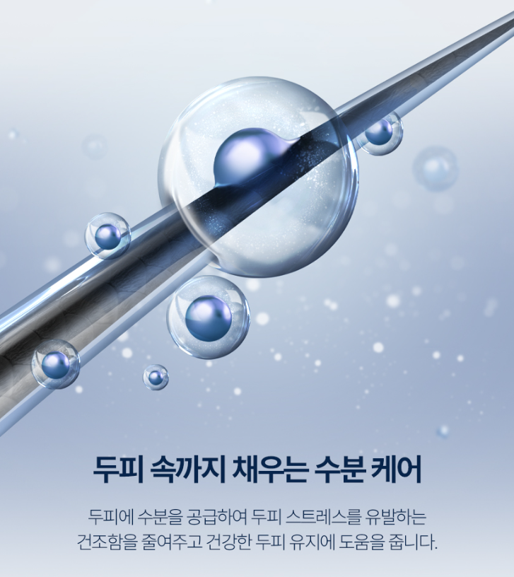
PANASONIC nanoe™ TECHNOLOGY
말리기만 해도
머릿결이 촉촉해지는
나노이 기술
머릿결이 촉촉해지는
나노이 기술
What is nanoe™?

나노이(nanoe™)란?
공기 중의 수분으로 만들어진, 수분을 가득 머금은 미세 이온입니다.
일반적인 공기 이온(약 1nm)보다 10배 큰 약 10nm 크기로, 더 많은 수분을 머금고 있습니다.
일반적인 공기 이온(약 1nm)보다 10배 큰 약 10nm 크기로, 더 많은 수분을 머금고 있습니다.
나노이의 효과
머릿결 본연의 윤기와 매끄러운 손끝 느낌을 잃게 하는 원인 중 하나는 모발의 뒤틀림입니다. 미세한 나노이가 모발에 수분을 공급해 수분 균형을 맞춰주면서 뒤틀림을 억제해, 윤기 있고 스타일링하기 쉬운 머릿결로 가꿔줍니다.
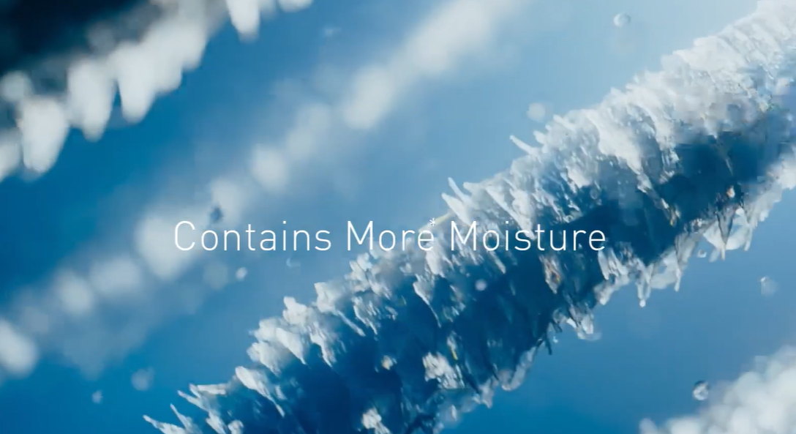
BEFORE · 나노이 침투 전
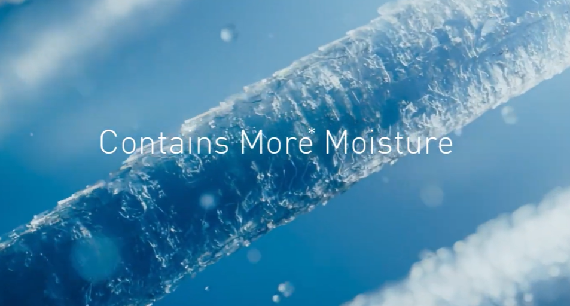
AFTER · 나노이 침투 후
고침투 나노이, 나노이가 가져오는 효과
머릿결 본래의 아름다운 윤기와 부드러운 손끝 느낌을 잃게 하는 원인 중 하나가 모발의 굴곡입니다.
미세한 나노이가 모발에 침투해 수분 밸런스를 정돈하여 굴곡을 억제하고, 매끄럽고 스타일링하기 쉬운 머릿결로 이끌어줍니다.
미세한 나노이가 모발에 침투해 수분 밸런스를 정돈하여 굴곡을 억제하고, 매끄럽고 스타일링하기 쉬운 머릿결로 이끌어줍니다.
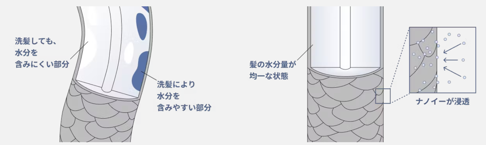
굴곡 있는 머리
모발에는 세발 시 수분을 포함하기 쉬운 부분과 포함하기 어려운 부분이 있습니다. 이로 인해 모발의 수분 균형이 불균일해지고 굴곡의 원인이 됩니다.
나노이로 굴곡 없는 머리카락에
미세한 나노이가 모발에 침투하여 수분 밸런스를 정돈해 굴곡을 억제합니다.

이온 유무에 따른 모발 변화 비교
이온 없음
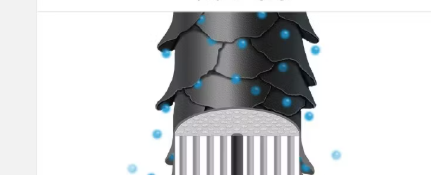
(수분이 증발)
푸석함의 원인
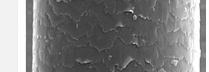
큐티클이 열린 상태
마이너스 이온
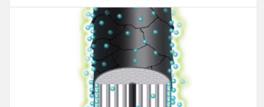
(모발 표면에 부착)
찰랑거리는 머릿결로
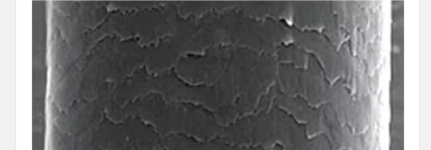
큐티클이 닫힌 상태
나노이
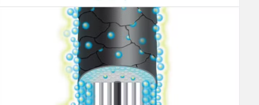
(모발에 침투)
모발에 수분을 주어 촉촉하게 정돈된 머릿결로
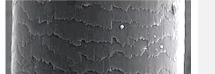
큐티클이 단단히 정돈된 상태
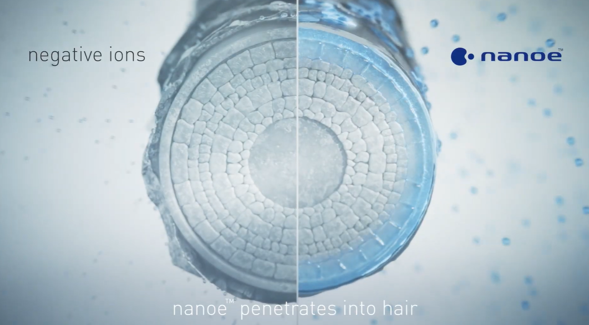
나노이 두피 개선 효과
이온 없음
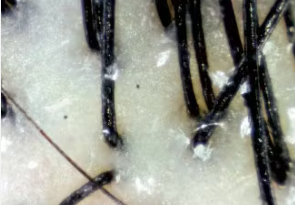
<두피 확대 사진>
고침투 나노이
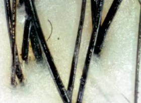
<두피 확대 사진>
촉촉한 상태
수분이 풍부한 나노이가 수분을 공급해, 피부 스트레스의 원인이 되는 건조를 억제합니다. 게다가 두피의 여분의 피지를 주변 수분과 혼합하기 쉬워져, 건강한 두피를 유지합니다.
나노이 헤어 개선 효과
사용 전
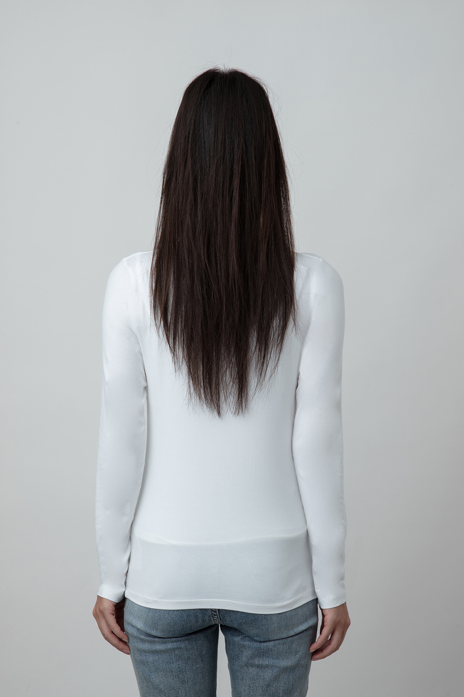
<사용 전>
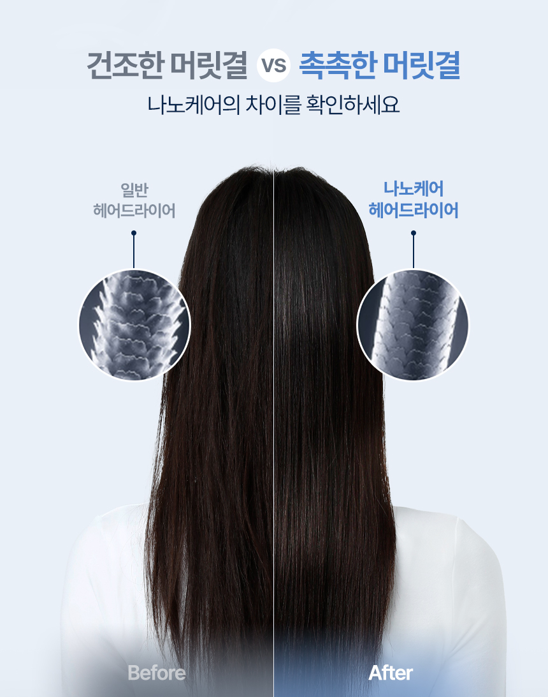
사용 후
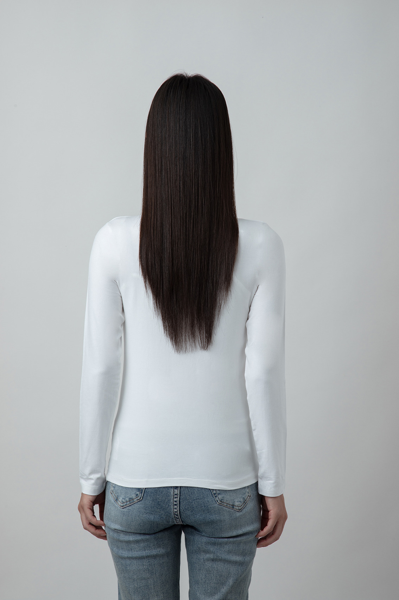
<사용 후>
윤기있고 차분한 모발
수분이 풍부한 나노이가 모발 속까지 수분을 공급해, 푸석함과 갈라짐의 원인이 되는 건조를 억제합니다. 게다가 모발 표면의 큐티클을 가지런히 정돈해, 자연스러운 윤기와 부드러움을 유지합니다.
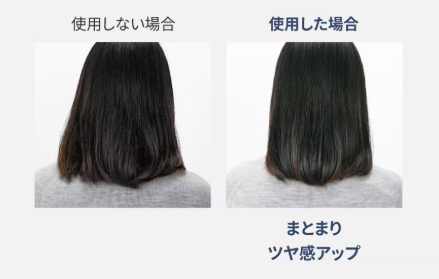
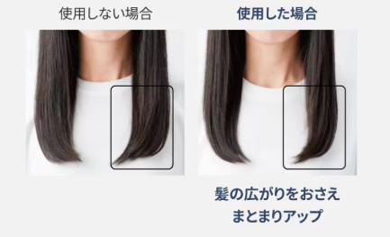
FEATURE 01
집중노즐 이용한 나노이 케어 방법
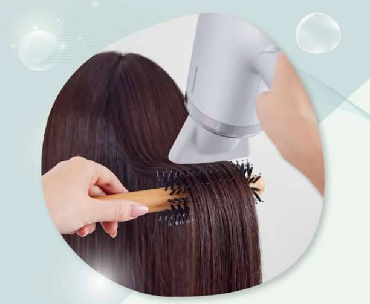
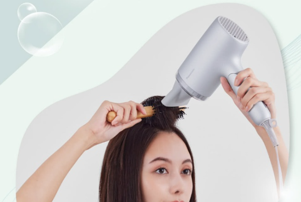
FEATURE 02
휴대하기 편한 접이식 디자인
국내 출장, 여행에도 부담없이. 접었을 때 높이 약 140mm · 너비 170mm · 깊이 74mm로 컴팩트해져, 외출지에서도 손쉽게 헤어케어를 이어갈 수 있습니다.
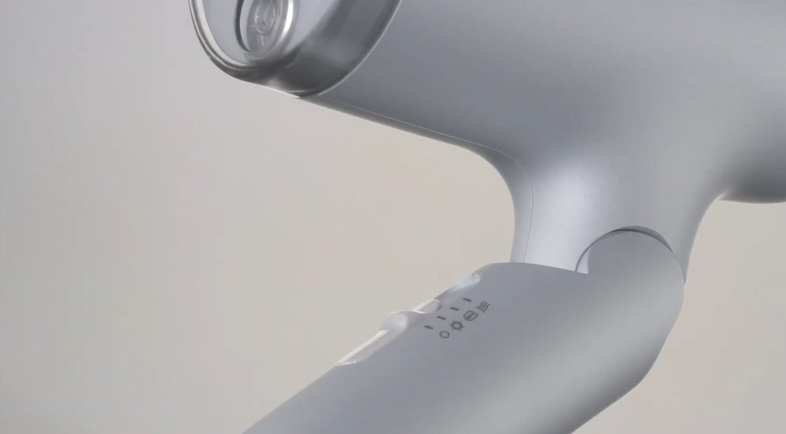
FEATURE 03
빠르고 아름답게 건조
파나소닉 고유의 속건 노즐은 강약 차이가 있는 바람을 만들어, 젖어서 밀착된 모발 다발을 풀어주며 건조하기 때문에 건조 성능이 뛰어납니다. 여기에 냉풍(COLD) 모드로 스타일을 고정해 여행지에서도 윤기 있는 스타일링이 가능합니다.
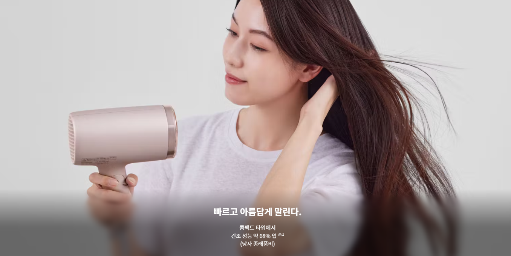
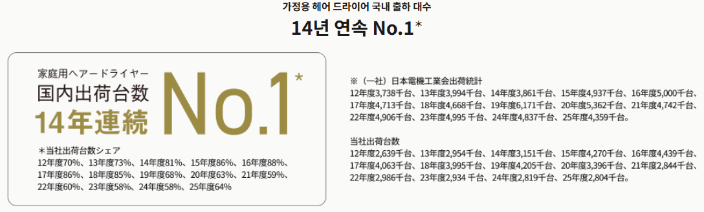
가정용 헤어드라이어 일본 내 출하대수 14년 연속 1위 · 파나소닉 본사 인증 정품
나노케어 헤어드라이어 보러가기
더 많은 파나소닉 정품을 네이버 스마트스토어에서도 만나보세요.
스마트스토어 바로가기 ↗